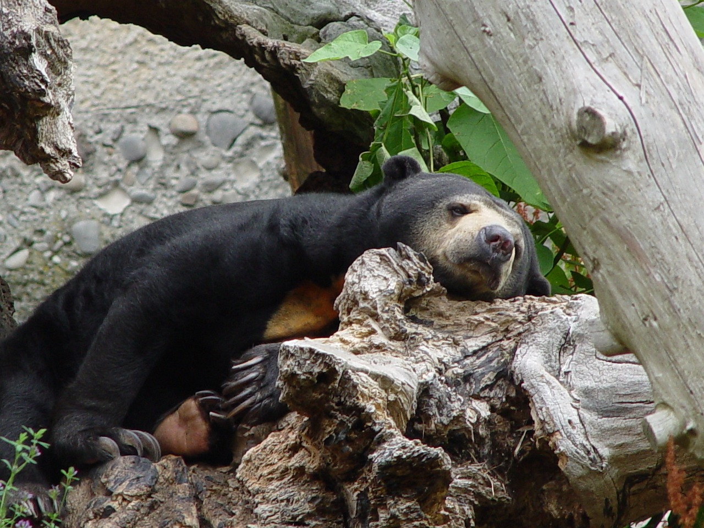

Sun bears

The sun bear, scientifically known as Helarctos malayanus, is a captivating species found in the lush rainforests of Southeast
Asia. As the smallest bear in the world, it possesses a distinct appearance with its sleek black fur and a distinguishing golden or
white crescent-shaped patch on its chest. Adapted for an arboreal lifestyle, sun bears exhibit remarkable tree-climbing abilities
and rely on their long, agile tongues to extract insects and honey from crevices. With an omnivorous diet consisting of fruits, small
mammals, birds, and vegetation, they play a crucial role in maintaining the ecological balance of their habitat. However, sun bears
face significant conservation challenges due to habitat loss, illegal hunting, and the pet trade.
Giant Panda bears
Giant pandas, often referred to simply as pandas, are widely regarded as the most endearing bear species,
thanks in part to their unique white and black fur coats, which serve both camouflage and thermal regulation functions.
While pandas possess the ability to consume meat, their diet primarily revolves around bamboo. To compensate for the
lower caloric value of bamboo, these magnificent creatures spend approximately 12 hours a day engaged in feeding
activities, ensuring they obtain sufficient energy to sustain themselves. A typical female adult panda weighs around
200 pounds, while males can weigh around 190 to 275 pounds.